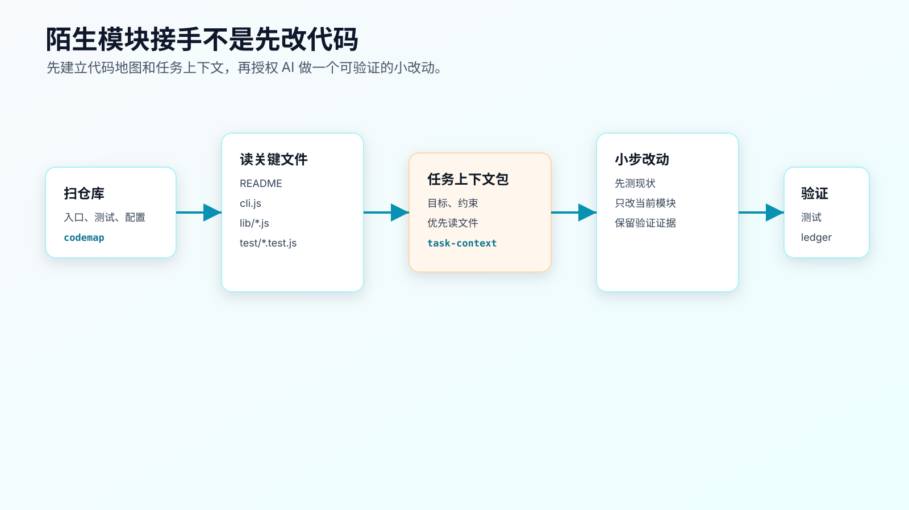
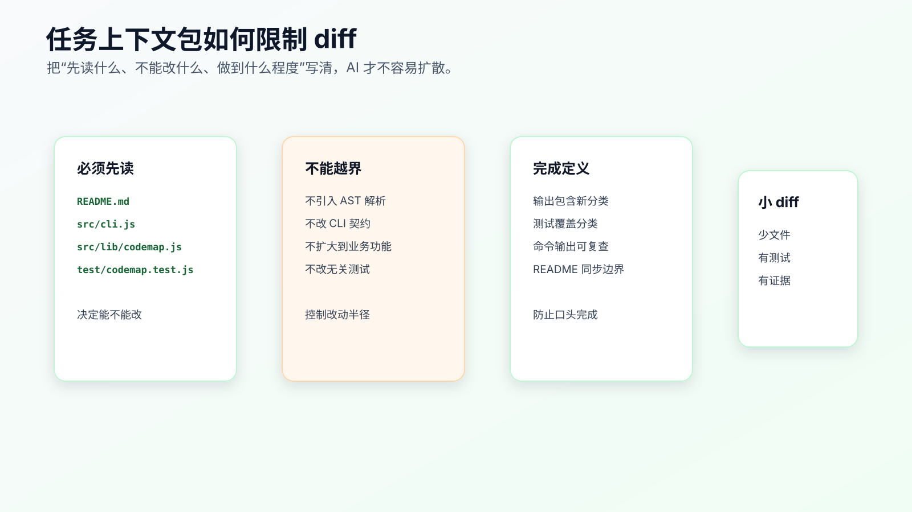

模块实战：让 AI 接手一个陌生代码模块
陌生模块接手，不是让 AI 进项目跑几条命令，然后听它说“我理解了”。
真实开发里，程序员更关心的是另一件事：在授权 AI 改代码之前，能不能先拿到一份可复查的接手记录。它要说明 AI 读了哪些文件、找到了哪些入口、测试在哪里、哪些目录不能乱碰、第一个小 diff 应该从哪里开始。
配套代码仓库 DavidDingXu/learn-ai-coding 按一个大仓库组织，仓库根目录下有业务 module 和工具 module。这里用工具 module：ai-coding-workflow-kit。它服务上下文工程和工具工作流，不是综合业务实战主线。
这一篇用 ai-coding-workflow-kit 的一次接手过程做案例。过程记录在：
learn-ai-coding/ai-coding-workflow-kit/dev-process/01-module-onboarding.md
对应的真实需求是：
第一次接手这个 CLI 工具项目，准备让 AI 后续改进 CLI，但现在不能直接授权它修改代码。
这就是很多程序员每天会遇到的场景：项目不大，但你并不熟；需求看起来简单，但入口、测试、README、examples、OpenSpec 材料混在一起；如果 AI 一上来就改，很容易改到错误位置。

起点：先禁止改代码
过程记录里的起始请求不是“帮我优化这个项目”，而是：
我想让 AI 帮我改进这个 AI Coding 工具项目。先不要改代码，先搞清楚项目结构、CLI 入口、测试覆盖和第一个安全的小改动应该从哪里开始。
这句话有三个关键约束：
只做仓库侦察。
不改文件。
输出接手记录。
如果没有这三条，AI 很可能直接进入实现：重构 CLI、补功能、改 README，甚至顺手调整测试。你还没搞清楚模块，它已经给你一个 diff。
陌生模块的第一步不是“提高效率”，而是降低误改概率。
第一轮：让 AI 读真实入口
接手记录先要求 AI 读取这些文件：
README.md
package.json
src/cli.js
src/lib/codemap.js
src/lib/task-context.js
src/lib/verification-ledger.js
test/cli.test.js
test/codemap.test.js
这组文件不是随便列的。它覆盖了当前项目的四个事实：
README.md 用户入口和可运行命令
package.json 测试命令和模块类型
src/cli.js CLI 分发入口
src/lib/*.js 核心能力实现
test/*.test.js 当前行为合同
让 AI 读文件时，不要只让它总结“项目做什么”。要让它带证据回答：
项目提供哪些 CLI 命令？
每个命令对应哪个实现文件？
当前测试覆盖哪些行为？
examples 和 openspec 目录在这次任务里是什么角色？
第一个小改动建议是什么，为什么风险低？
这些问题会迫使 AI 回到文件，而不是泛泛说“这是一个提高 AI Coding 效率的工具”。
第二轮：生成代码地图，但不把它当结论
可以在配套工程的工具 module 里运行：
cd learn-ai-coding/ai-coding-workflow-kit
npm test
node src/cli.js codemap --root .
这两条命令的作用不同。
npm test 是改前基线。当前项目应当看到：
tests 12
pass 12
fail 0
codemap 是导航证据。它会输出源码、测试、文档、配置和建议优先阅读的文件。
但代码地图不是架构真相。它只是第一层索引。程序员还要复核：
src/cli.js 是否真的是入口？
test/cli.test.js 是否覆盖进程级行为？
examples/ 是否只是验证记录样例？
openspec/changes/ 是否是历史变更材料，还是当前要改的 source of truth？
这一步很重要。AI 容易把“看起来相关的目录”都当成当前实现路径。代码地图帮你缩小范围，但不能替你做工程判断。
第三轮：形成接手记录
过程记录里的 AI handoff prompt 是这样写的：
你现在只做仓库侦察，不改文件。
请阅读 README.md、package.json、src/cli.js、src/lib/*.js 和 test/*.test.js，
输出一份接手记录：
1. CLI 当前命令列表。
2. 每个命令对应的实现文件和测试文件。
3. 第一个小改动建议。
4. 不应该修改的目录或文件。
5. 最小验证命令。
一份合格的接手记录至少应该包含：
CLI 入口：src/cli.js
核心能力：codemap、context-audit、task-context、context-pack、verify-ledger
测试入口：test/*.test.js
验证命令：npm test
谨慎目录：examples/、openspec/changes/
第一个小改动候选：补齐 CLI 合同或改进 codemap 输出
如果 AI 没列出实际读过的文件，或者只给一段项目介绍，就不能进入实现。
接手记录的价值不在文字漂亮，而在于你能逐条检查。
第四轮：把第一个小改动写成任务上下文
接手完成后，仍然不要直接说“那你改吧”。
先把第一个小需求写窄。例如：
改进 codemap 的优先阅读文件说明，让 AI 接手陌生项目时知道先读哪些文件，并保持现有统计字段不变。
可以生成任务上下文包：
node src/cli.js task-context \
--title "改进 codemap 的优先阅读文件说明" \
--files "src/lib/codemap.js,test/codemap.test.js,src/cli.js,README.md" \
--constraints "不引入 AST 解析,不改变 codemap 命令名,不删除现有统计字段" \
--done "npm test 通过,codemap 输出仍包含 Code Map 和 Files AI Should Inspect First"
这里的关键不是命令本身，而是任务上下文里的四个字段：
目标：改什么行为。
文件：先读哪些文件。
约束：哪些事不能做。
完成定义：怎么证明完成。
这比“优化一下代码地图”可靠得多。
第五轮：人工复核后再授权
过程记录里的人工复核点包括：
src/cli.js 是命令分发入口。
src/lib/codemap.js 是代码地图实现。
test/codemap.test.js 是行为保护点。
examples/ 是验证记录样例，不是生产输入。
openspec/changes/ 是变更材料，不是当前运行路径。
当前最小验证命令是 npm test。
复核通过后，才允许 AI 做第一个小 diff。
授权可以写得很具体：
只修改 src/lib/codemap.js 和 test/codemap.test.js。
先补测试，证明输出里应该包含优先阅读文件。
不要修改 CLI 命令名。
不要引入 AST 解析。
完成后运行 npm test，并说明 diff 为什么没有影响 verify-ledger。
这就是从“接手模块”进入“开发需求”的边界。
如果 AI 此时要求改 src/cli.js、README 或 OpenSpec，也不一定错，但必须先解释为什么原授权范围不够。不能让它在同一轮里自动扩大范围。
验证：命令只是证据
陌生模块接手后的验证不止 npm test。
可以看三类证据。
第一，测试基线：
npm test
第二，目标命令输出：
node src/cli.js codemap --root .
node src/cli.js context-audit --root .
第三，diff 范围：
git diff --stat
git diff -- src/lib/codemap.js test/codemap.test.js
这些命令不能替代接手记录。它们只能证明两件事：
当前项目还能跑。
这次授权的文件范围没有明显越界。
如果没有前面的任务卡、上下文侦察和人工复核，单看命令输出只能说明工具能运行，不能说明 AI 接手是可靠的。

这套做法怎么迁移
换到你的项目里，可以照这个顺序走。
先写真实需求：
我第一次接手这个模块，准备让 AI 后续协助修改，但现在只允许它做侦察。
再限定文件侦察：
请先找入口、核心实现、测试、配置、文档和禁止修改目录。
每个结论都要带文件路径。
不要改文件。
然后要求接手记录：
模块职责。
调用入口。
当前测试。
风险目录。
第一个安全小改动。
最小验证命令。
不确定点。
最后才授权小 diff：
只改一个行为。
只动明确文件。
先补测试。
跑 focused test。
报告剩余风险。
大仓库里不要让 AI 一次“理解整个项目”。先把范围缩到一个模块、一条入口、一组测试。
常见错误
错误一：把代码地图当架构文档。
代码地图只负责导航。真实调用链、业务边界和修改权限仍要回到源码和测试确认。
错误二：AI 没列读过的文件就让它改。
没有文件证据的理解，只是模型根据项目名和目录猜出来的解释。
错误三：接手记录写得很长，但没有第一个小改动。
接手不是写百科。最终要导向一个低风险、可验证的小 diff。
错误四：只跑测试，不看 diff。
测试绿了不代表范围没越界。陌生模块接手后，尤其要看 AI 是否顺手改了 README、examples、OpenSpec 或无关工具。
错误五：把不确定点藏起来。
真实项目里，不确定点比“我理解了”更有价值。比如调用方是否还有外部脚本、README 命令是否进入 CI、历史变更包是否仍有效。
可复查资料
- 接手过程记录：
learn-ai-coding/ai-coding-workflow-kit/dev-process/01-module-onboarding.md - 项目 README：
learn-ai-coding/ai-coding-workflow-kit/README.md - CLI 入口：
learn-ai-coding/ai-coding-workflow-kit/src/cli.js - 代码地图实现：
learn-ai-coding/ai-coding-workflow-kit/src/lib/codemap.js - 任务上下文实现：
learn-ai-coding/ai-coding-workflow-kit/src/lib/task-context.js - 测试目录：
learn-ai-coding/ai-coding-workflow-kit/test/